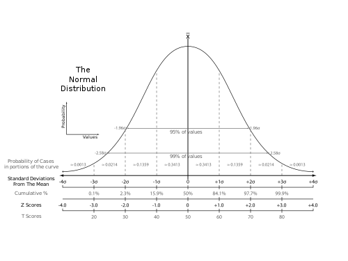

Disciplinas
-
Estatística e Probabilidade Concluído
Materiais
- Estatística - Aula 09 - Distribuições de probabilidade
-
Professor ministrante: André Fleury (Univesp)
Conteúdo
Distribuições de probabilidade
Objetivos:
- Distribuições de probabilidade: Bernoulli, Binomial, Poisson e Normal.
- Propriedades das distribuições.
- Experimento aleatório.
- Realizado repetidas vezes (tentativas).
- Mantidas as mesmas condições.
- Resultado: sucesso (s) ou fracasso (f).
Ex: lançamento de uma moeda.
- P(sucesso) = p
- P(fracasso) = q = 1-p
- P = pᴷq¹⁻ᴷ K ∈ {0,1}
- N provas independentes.
- Sucesso ou Fracasso (Bernoulli).
- P₍ₛᵤᶜₑₛₛₒ₎ = P ⇒ (constante)
- Mantidas as mesmas condições.
Ex: lançamento de uma moeda.
- P = p.p.p. ... .p.q.q. ... .q
- pᴷ ·qⁿ⁻ᴷ
- Nessa ordem!
- P(X = k) = (ⁿ/ᴷ)·pᴷ·qⁿ⁻ᴷ
- (ⁿ/ᴷ) = n!/(k!(n-k)!)
- Média da distribuição
- μ = np
- σ²₍ₓ₎ = npq
Ex: torno mecânico
- 25% defeitos.
- Amostra N = 16.
- X = Peças defeituosas.
- P(X = 4) = ?
- p(X = 4) = (16/4)·0,25⁴·0,75¹² = 0,2252.
- Média da distribuição
- μ = 16·0,25 = 4 (Média de 4 peças defeituosas)
- σ² = 16·0,25·0,75 = 3 (Variância)
Ex: lançamento de 8 moedas.
- A) Exatamente 5 caras.
- p₍ₓ₌₅₎ = 8!(5!(8-5)!)·0,5⁵·0,5⁸⁻⁵ = (40320/120.6)0,5⁸ = 0,21875 = 21,88%.
- B) Pelo menos uma cara.
- p₍ₓ ≥ ₁₎ = 1-p₍ₓ ₌ ₀₎ = 1 - (8!/(0!(8 - 0!)))·0,5⁸·0,5⁰ = 1 - 0,5⁸ = 0,9960 = 99,6%.
- X = Peças defeituosas.
- P(X = 4) = ?
- Média da distribuição
- μ = 16·0,25 = 4 (Média de 4 peças defeituosas)
- σ² = 16·0,25·0,75 = 3 (Variância)
- "lim Binomial = Poisson".
- n → x.
Hipóteses:
- Eventos definidos em intervalos não sobrepostos são independentes.
- λ é constante no intervalo estudado.
- Exemplos:
- Carros que passam por cruzamento por minuto durante uma certa hora do dia.
- Erros tipográficos por página em um material impresso.
- Defeitos por unidade (m³, m², m, etc.)
- Colônias de bactérias numa dada cultura por 0,01mm², numa plaqueta de microscópio.
- Mortes por ataque de coração por ano, numa cidade.
- Problemas de filas de espera em geral.
- P(X = k) = (e⁻λᵗ·(λt)ᵏ)k!
- Exemplos:
- Semáforo.
- λ = 4 veículos por minuto.
- t = intervalo de 2 minutos.
- P(X = 7) = ?
- μ = λ·t = 4·2 = 8.
- P(X = h) = (e⁻λᵗ·(λt)ᴴ)h!
- P(X = 7) = (e⁻⁴·²·(4·2)⁷)7! = 0,1396 = 13,96% de chances.
- Teorema do limite central:
- A soma de infinitas variáveis independentes segue uma distribuição normal. 
- Fórmula:
- f(x) = 1/(σ√2π) e⁻¹/²(ˣ⁻μ/σ)², -∞ < · < + ∞
- Depende dos parâmetros média (μ) e desvio padrão (σ)
- σ(A) > σ(B) > σ(C)
- Processo numa linha de montagem:
- μ = 230 minutos.
- σ = 15 minutos.
- P(T ≤ 240,5) = ?
- Z = x-μ/σ = (240,5-230)/15 = 0,70